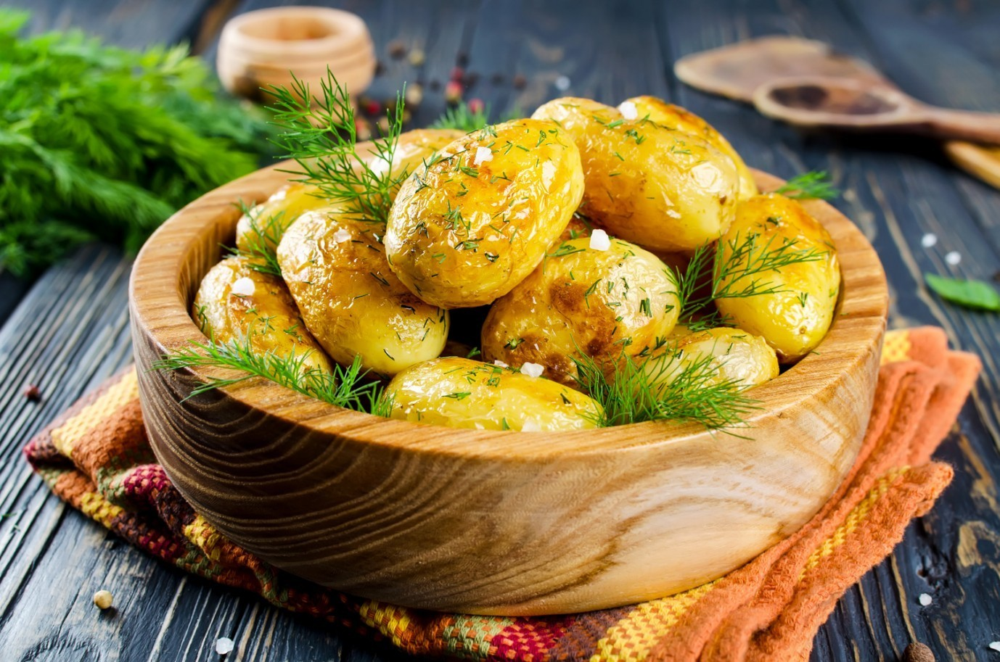
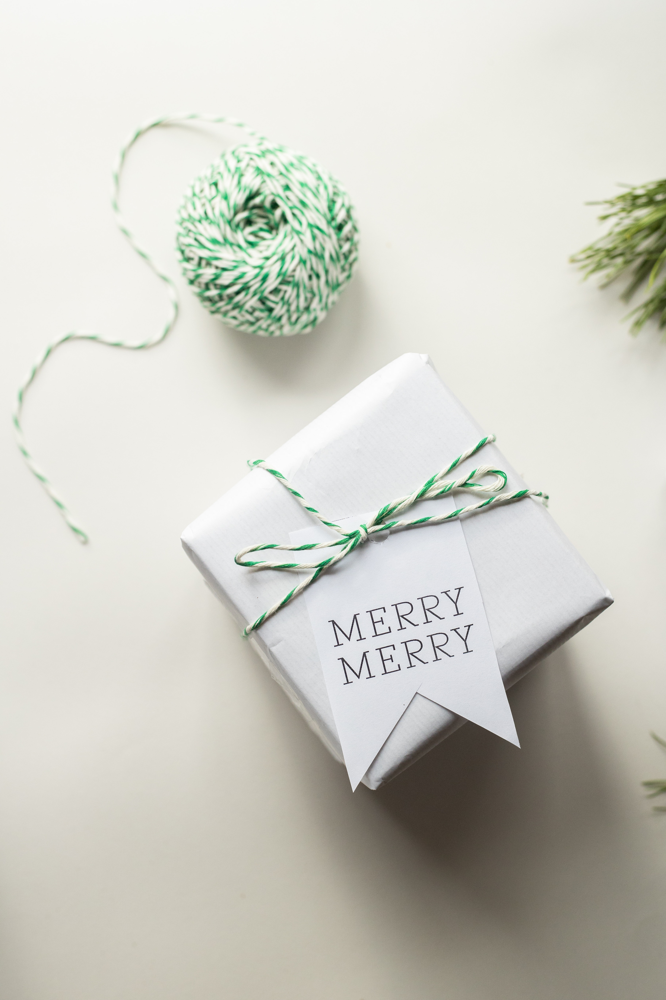

Сад Софии, место где я делюсь картинками и видео со своими:
Каждый праздник и прием родных и гостей, для меня всегда вызов в кулинарном плане. Мне нравится удивить чем-то новеньким, а также сдобрить стол проверенными блюдами, которые нравятся гостям, чтобы все прошло прекрасно и весело.
Главное при приготовлении блюд:
Также я люблю заниматься рукоделием, созданием картин, украшений и других радующих глаз вещей. Эти экспозиции украшают мой дом, а так же дома моих друзей и знакомых, которым я их дарю.
